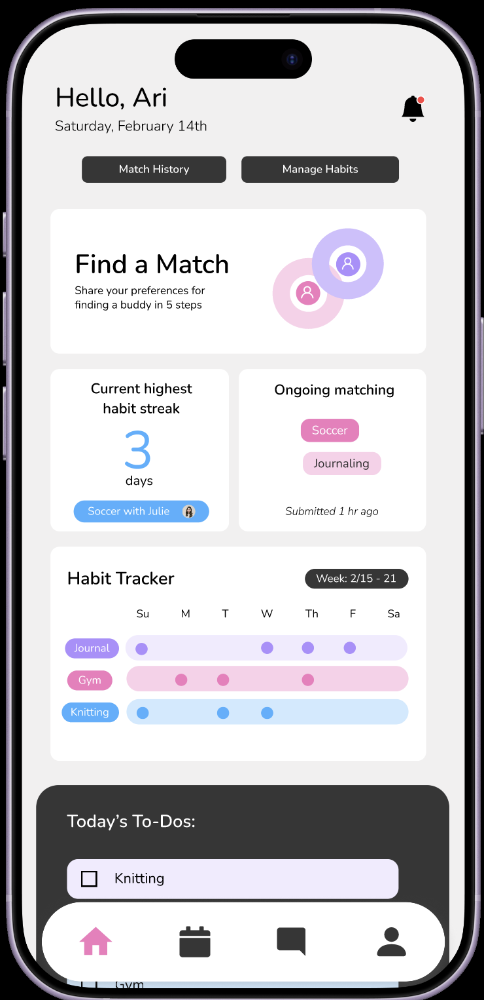
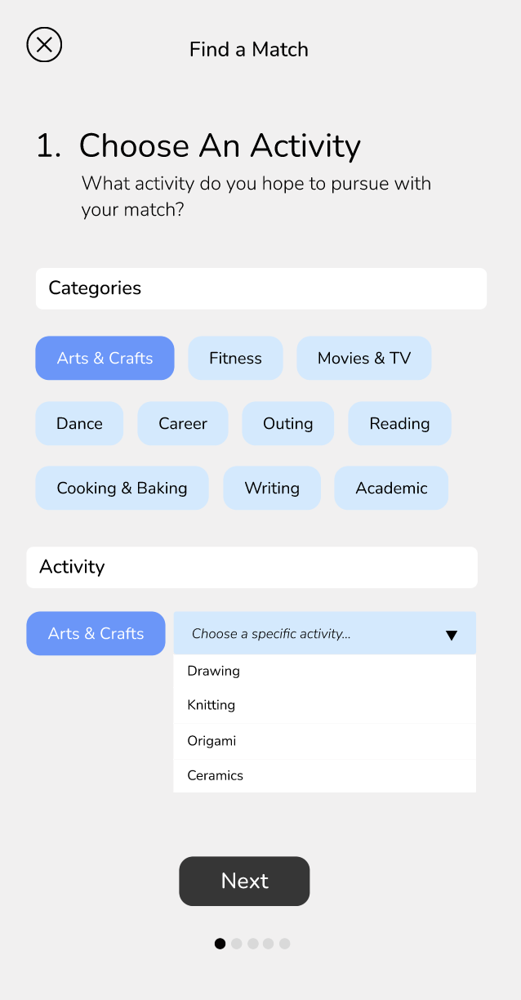
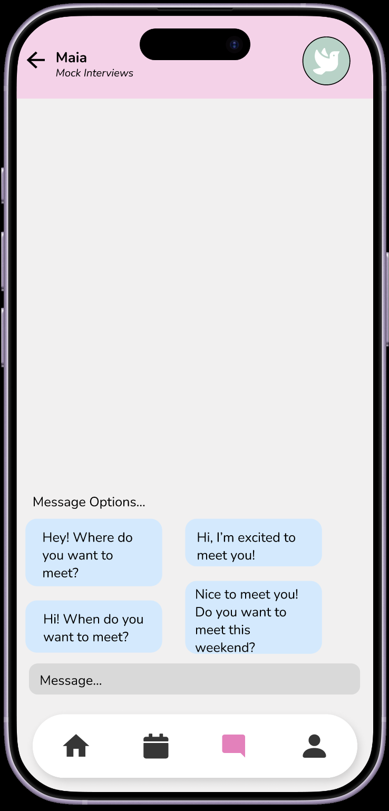

My Role
-----------------
• Provided first design sketches for Circles' interface
• Conducted Interviews with potential users to survey their needs and Circles' usability
• Designed Circles's Interface on Figma alongside team members
Background and Problem
-----------------------------------------------
The Problem:
Students struggle to consistently engage in hobbies independently or discover new interests. Maintaining progress alone is challenging, as academic and personal commitments often "take over" the motivation for self-accountability.
Our Solution + Target Audience:
Circles is an app focused on accountability through social interaction. Our target users are Wellesley students interested in learning, teaching, or practicing hobbies with like-minded peers, particularly those who struggle to find time for independent practice or wish to expand their social circles. With Circles, users can share interests and maintain mutual accountability.
Focus Areas
----------------------------
Idea #1: The Matching Process

Customized Pairing: User give specific preferences to find their matches such as: expertise level, meeting frequency, and meeting intent.
Intuitive Feedback: We utilized active button states and dropdowns to provide confimration for the user that they have clicked on these buttons. This also helps make the multistep matching process easier to complete and navigate.
Idea #2: Habit Tracker
Visual Reinforcement: We chose a bright, vibrant color palette for the trackers to create a "feel-good" experience, providing positive psychological reinforcement every time a user opens the app to see their progress.
Visual Balance: We utilized the principle of Common Region by enclosing specific tasks and match data within clearly defined widgets. This visual grouping allows the user to quickly distinguish between different types of information. This was made so the dashboard could feel balanced and intuitive.
Idea #3: Prompt Messaging

Familiar Layout: We kept the chat layout similar to other well-known messaging apps like Messages and WhatsApp. This ensures that the user is familiar with the interface.
User Control: The navigation bar at the bottom of every page in our interface remains accesible even when you are in a messaging page. The user will have complete freedom to navigate away to check their calendar when they finish chatting with their match.
Key Takeaways
--------------------------------
User Interview Experience:
One of my most valuable lessons was learning to "read between the lines" during user interviews. By observing body language and noting what users didn't say, I was able to identify some underlying needs that would make our interface easier to use.
The Power of Metaphors:
I realized how significant "familiar metaphors" are in mobile design. A lot of users mentioned how easy it was to navigate through Circles because of our navigation bar at the bottom. By selecting icons similar to those in well-known apps, it made it easy for users to navigate the interface without a learning curve.